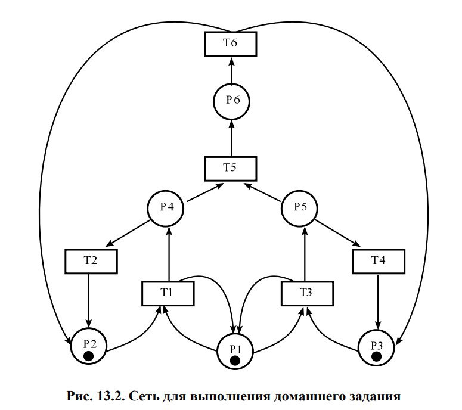

Выполнить задание для самостоятельного решения.
CPN Tools – это специальная моделирующая система, которая использует язык сетей Петри для описания моделей. Система была разработана в Университете Орхуса в Дании и свободно распространяется для некоммерческих организаций через сайт http://www.daimi.au.dk/CPNTools/. Уровень предоставляемого сервиса позволяет классифицировать CPN Tools как промышленную моделирующую систему. Она была использована в большом количестве реальных проектов, особенно в области телекоммуникаций. В последнее время корпорация Nokia применяет CPN Tools для управляемой моделью разработки нового поколения мобильных телефонов.
CPN Tools предлагает очень мощный класс сетей Петри для описания моделей. Согласно стандартной классификации такие сети называют иерархическими временными раскрашенными сетями Петри. Было доказано, что они эквивалентны машине Тьюринга и составляет универсальную алгоритмическую систему. Таким образом, произвольный объект может быть описан с помощью этого класса сетей.
13.1. Схема модели Заявка (команды программы, операнды) поступает в оперативную память (ОП), затем передается на прибор (центральный процессор, ЦП) для обработки. После этого заявка может равновероятно обратиться к оперативной памяти или к одному из двух внешних запоминающих устройств (B1 и B2). Прежде чем записать информацию на внешний накопитель, необходимо вторично обратиться к центральному процессору, определяющему состояние накопителя и выдающему необходимую управляющую информацию. Накопители (B1 и B2) могут работать в 3-х режимах: 1) B1 — занят, B2 — свободен; 2) B2 — свободен, B1 — занят; 3) B1 — занят, B2 — занят. Схема модели представлена на (рис. @fig:001)
На схеме: – src — источник заявок; – B1 и B2 — накопители для хранения заявок; – RAM — оперативная память; – CPU — центральный процессор; – B1, B1 — внешние запоминающие устройства
13.2 Описание модели (рис. @fig:002) Сеть Петри моделируемой системы представлена на рис. 13.2. Множество позиций: P1 — состояние оперативной памяти (свободна / занята); P2 — состояние внешнего запоминающего устройства B1 (свободно / занято); P3 — состояние внешнего запоминающего устройства B2 (свободно / занято); P4 — работа на ОП и B1 закончена; P5 — работа на ОП и B2 закончена; P6 — работа на ОП, B1 и B2 закончена;

Множество переходов: T1 — ЦП работает только с RAM и B1; T2 — обрабатываются данные из RAM и с B1 переходят на устройство вывода; T3 — CPU работает только с RAM и B2; T4 — обрабатываются данные из RAM и с B2 переходят на устройство вывода; T5 — CPU работает только с RAM и с B1, B2; T6 — обрабатываются данные из RAM, B1, B2 и переходят на устройство вывода.
Функционирование сети Петри можно расматривать как срабатывание переходов, в ходе которого происходит перемещение маркеров по позициям: – работа CPU с RAM и B1 отображается запуском перехода T1 (удаление маркеров из P1, P2 и появление в P1, P4), что влечет за собой срабатывание перехода T2, т.е. передачу данных с RAM и B1 на устройство вывода; – работа CPU с RAM и B2 отображается запуском перехода T3 (удаление маркеров из P1 и P3 и появление в P1 и P5), что влечет за собой срабатывание перехода T4, т.е. передачу данных с RAM и B2 на устройство вывода; – работа CPU с RAM, B1 и B2 отображается запуском перехода T5 (удаление маркеров из P4 и P5 и появление в P6), далее срабатывание перехода T6, и данные из RAM, B1 и B2 передаются на устройство вывода; – состояние устройств восстанавливается при срабатывании: RAM — переходов T1 или T2; B1 — переходов T2 или T6; B2 — переходов T4 или T6.
Построили дерево достижимости и провели анализ сети (рис. @fig:003).

Промоделировали сеть Петри с помощью CPNTools.(рис. @fig:004)

Задали контест в CPNTools.(рис. @fig:005)

Вычислили пространство состояний. Сформировали отчёт о пространстве состояний и проанализировали его. (рис. @fig:006)
Из отчета можно увидеть:
Общие параметры сети
Безопасность
Достижимость
Активность переходов
В конце указано, что бесконечно часто могут происходить переходы T1, T2, T3, T4, но не обязательно, также состояние T5 необходимо для того, чтобы система не попадала в тупик, а состояние T6 происходит всегда, если доступно.
Построили граф пространства состояний.(рис. @fig:007)
Выполнили задание для самостоятельного решения.
::: - https://docs.yandex.ru/docs/view?tm=1746275639&tld=ru&lang=ru&name=cpnmp-ru.pdf&text=cpn%20tools%20%D1%8D%D1%82%D0%BE%20%D1%87%D1%82%D0%BE&url=http%3A%2F%2Fdaze.ho.ua%2Fcpnmp-ru.pdf&lr=213&mime=pdf&l10n=ru&sign=a6a9325b2613af43bd90ae2a598df5f3&keyno=0&nosw=1&serpParams=tm%3D1746275639%26tld%3Dru%26lang%3Dru%26name%3Dcpnmp-ru.pdf%26text%3Dcpn%2Btools%2B%25D1%258D%25D1%2582%25D0%25BE%2B%25D1%2587%25D1%2582%25D0%25BE%26url%3Dhttp%253A%2F%2Fdaze.ho.ua%2Fcpnmp-ru.pdf%26lr%3D213%26mime%3Dpdf%26l10n%3Dru%26sign%3Da6a9325b2613af43bd90ae2a598df5f3%26keyno%3D0%26nosw%3D1
https://en.wikipedia.org/wiki/CPN_Tools
https://community.chocolatey.org/packages/cpntools :::